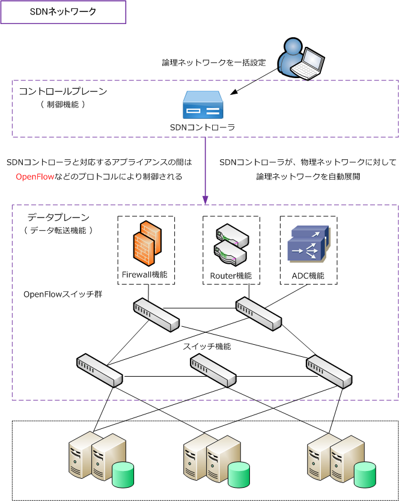
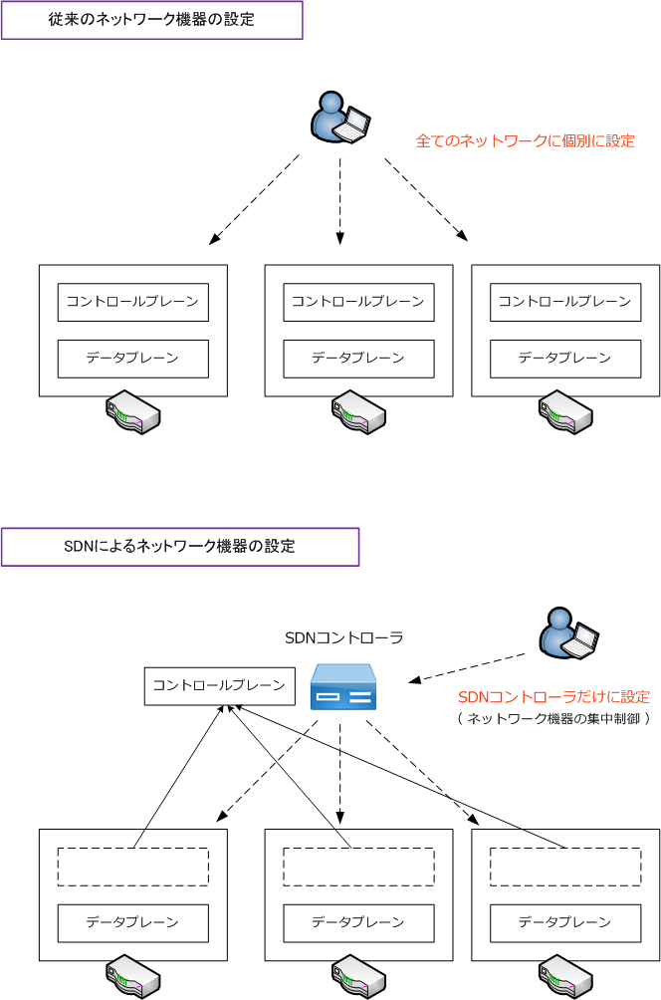
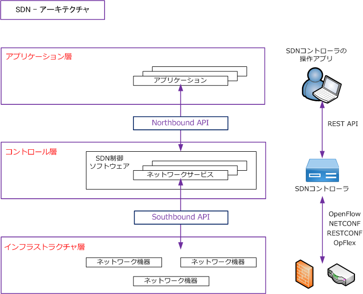

SDN ( Software Defined Network )
SDNとは
SDN（Software Defined Network）とは単一のソフトウェアによりネットワーク機器を集中的に制御 して、ネットワーク構成や設定などを柔軟に動的に変更することができる「技術の総称」のことです。 SDNでは管理ツールでの事前に設定するだけで、ネットワーク構成、性能、機能を動的に変更できます。
従来の物理的なネットワークは、サーバやネットワーク機器の追加やネットワーク構成を変更する際に、 ケーブルの抜き差しの物理作業やルータ、スイッチ、Firewallなどを1つ1つ変更する必要がありました。
SDNでは、機器の「データ転送機能と制御機能」を分離して、制御機能をSDNコントローラと呼ばれる ソフトウェアにより一か所の集中管理することで物理的な変更をすることなく、どの機器にどのような 動作をさせるのか柔軟に設定することができます。

SDNコントローラによって、目的に応じて複数の仮想的なネットワークを構築することができることから、 「SDN=ネットワーク仮想化技術」と定義している文献もありますが、ネットワーク仮想化はSDNによらず 別の技術で実現する手法があるため、ネットワーク仮想化技術はSDNそのものとは区別する必要があります。 その観点からもSDNはNW仮想化技術というより、文字通り「ソフトウェア定義ネットワーク」と言えます。
SDN - データプレーン、コントロールプレーン
SDNでは「データ転送機能と制御機能」を分離すると解説しましたが、この「データ転送機能」のことは データプレーンと言い、「制御機能」のことはコントロールプレーンと言います。役割を簡単に言うと、 データプレーンでは受信したデータの転送処理を行い、コントロールプレーンでは、データプレーンにて データの転送処理をするために必要な経路情報の作成など複雑な制御を行います。

従来のネットワークでは、各ネットワーク機器にデータプレーンとコントロールプレーンが存在すること から、各ネットワーク機器に設定する必要がありましたが、SDNでは各ネットワーク機器に存在していた コントロールプレーンを、SDNコントローラにて集中管理することになり、各ネットワーク機器を個別に 設定する必要がなくなります。なお、上図では分かりやすくルータだけの絵としていますが、実際のSDN ネットワークではルータ以外にもFirewall、ロードバランサ、L2スイッチなど色々なネットワーク機器の コントロールプレーンをSDNコントローラで集中管理することができます。
SDNのアーキテクチャ
SDNのアーキテクチャは下図の通りです。SDNは、3つのコンポーネントから構成されています。

インフラストラクチャ層
データ転送を実際に行うネットワーク機器のレイヤです。これらの機器の制御には、OpenFlowやNETCONF などの標準プロトコルや、機器ごとに設定されたAPI（Application Programming Interface）を利用します。 この部分のAPIはSouthbound API（サウスバウンドAPI）と呼びます。
コントロール層
SouthboundのプロトコルやAPIを使用した機器の制御をするレイヤです。同時にインフラストラクチャ層の ネットワーク機器のネットワーク機能を抽象化したAPIをアプリケーション層に提供します。この部分のAPIは Northbound API（ノースバウンドAPI）を呼びます。
アプリケーション層
SDNコントローラに設定するアプリケーションが該当するレイヤです。SDNを操作するアプリケーションは SDNコントローラとセットで提供されます。アプリケーション層では、APIを通じてネットワークの様々な 処理をSDNコントローラへ指示する層です。
・ Southbound API（サウスバウンドAPI）は、サウスバウンドインターフェース（SBI）とも呼ばれます。 ・ Northbound API（ノースバウンドAPI）は、ノースバウンドインターフェース（NBI）とも呼ばれます。